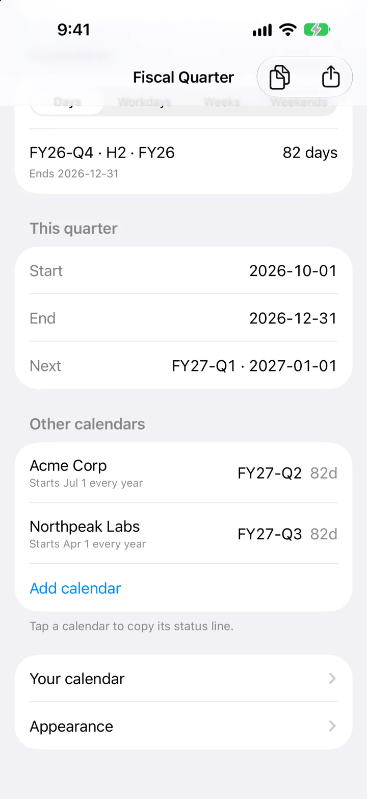
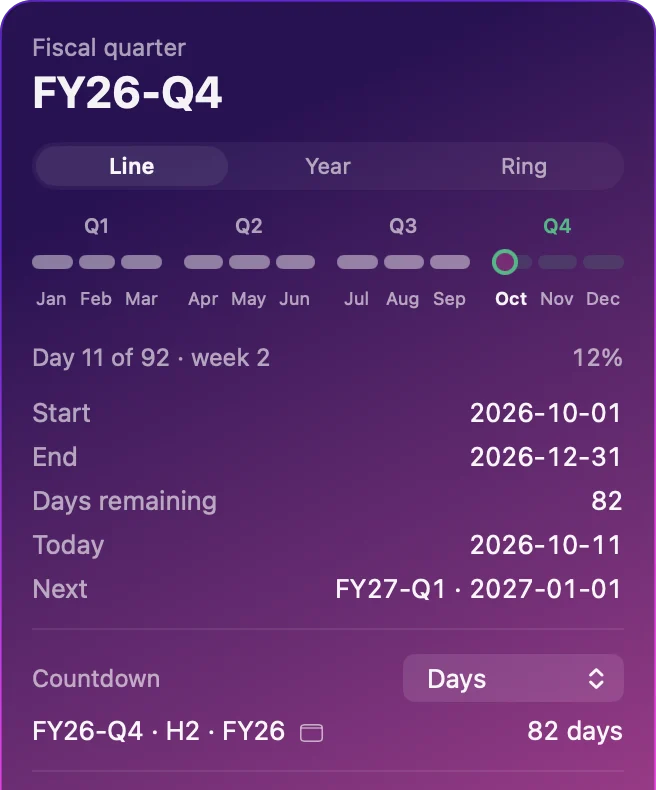
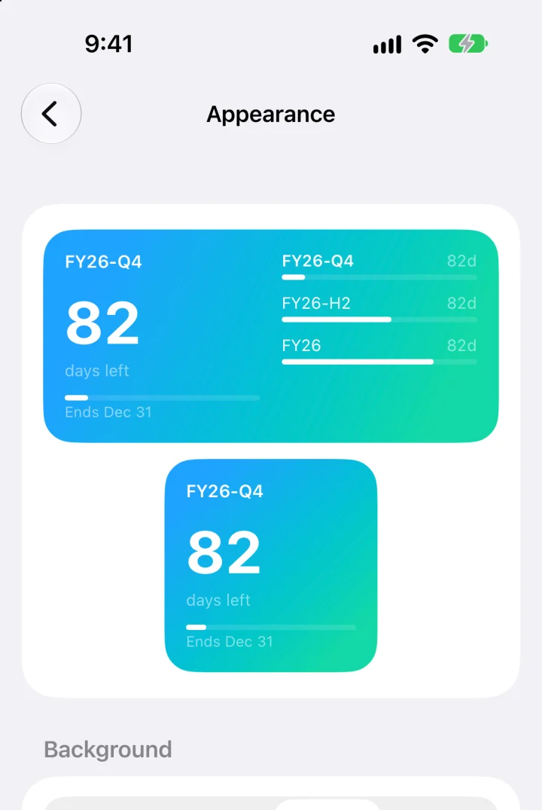
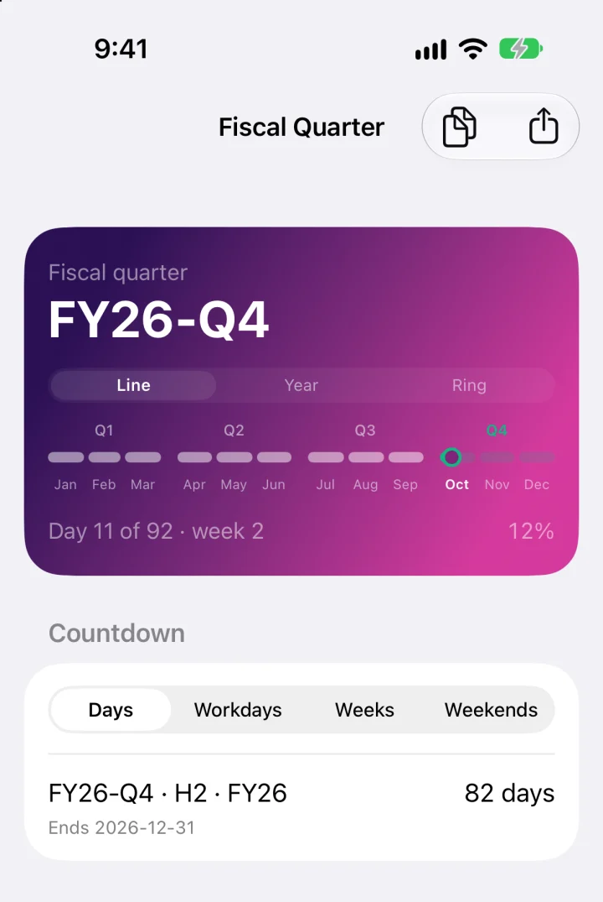

Count down in the unit you think in.
Days to the end of the quarter, the half, and the fiscal year. Or workdays, if you think in working weeks, or weekends, if you're planning around them. Click any countdown in the panel to put it in the menu bar instead.
The numbers here are live for today, using the built-in calendar.

Your customers' years don't start when yours does.
Add the fiscal calendars of the companies you sell to or work with, by name and the day their year starts. The panel lists each one with its quarter and days left, and turns amber in their last two weeks, so you see their quarter end coming.
Calendars with a short transition year, or quarters that don't follow whole months, can be imported from a file.
fq --all
Yours FY26-Q4 · Day 11 of 92 · week 2 · 82 days left
Acme Corp FY27-Q2 · Day 11 of 92 · week 2 · 82 days left
Northpeak Labs FY27-Q3 · Day 11 of 92 · week 2 · 82 days left
Make it look like yours.
One look covers the app and every widget, and changes reach the widgets at once.



The same answers in a shell.
The app carries a command called fq that reads the same calendars, and puts it at ~/.local/bin/fq when it opens from Applications. Use it in scripts, status bars, or a Slack message.
fq FY26-Q4 2026-10-01 – 2026-12-31 Day 11 of 92 · week 2 82 days left Next FY27-Q1 on 2027-01-01 fq --countdown FY26-Q4 · H2 · FY26 ends 2026-12-31 82 days · 59 workdays · 12 weekends fq --id FY26-Q4
Output from 11 October 2026. fq --json prints all of it as one object.
Get Fiscal Quarter.
Download the disk image, drag the app to Applications, and open it. It's signed and notarized, so it opens like any other app.
- Free and open source.
- No account, and no network access.
- macOS 13 or later. Widgets need macOS 14.
- The iPhone and iPad app builds from the same repository.
- The built-in fiscal year is the calendar year. Any other start date is one setting away.